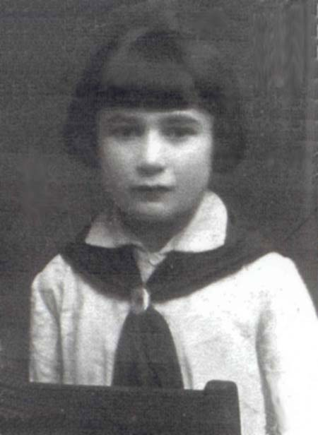
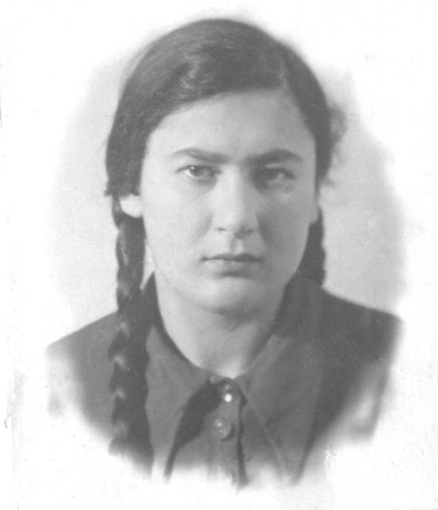
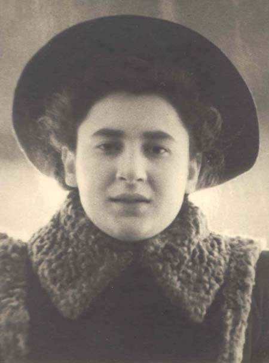
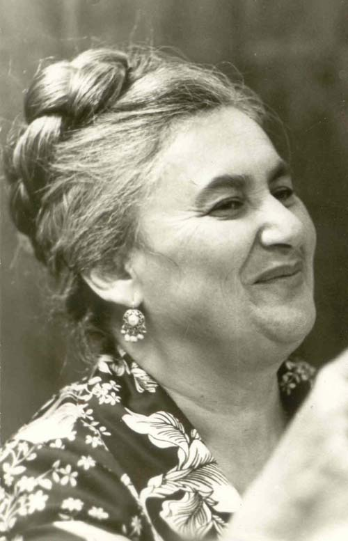

Родилась 27 августа 1929 года в Мирополе Житомирской области Украины.
Отец - Цымринг Давид Иосифович, 1891 года рождения.
Мать - Цымринг (Вайсберг) Полина Абрамовна, 1899 года рождения.
До 1941 года жила в Мирополе.
После гибели семьи, в 1941-1942 году жила в Острополе, потом (1942-1944 годы) в селах Чернятино и Капустино Строконстантиновского района.
В 1944 году переехала в Москву. После окончания школы (1944-1946 годы), поступила в Московское театрально-художественное училище на художественно-костюмерное отделение. Окончила в 1949 году.
В 1961 году поступила ГИТИ им. Луначарского, который окончила в 1966 году, получив специальность театроведа.
До 1966 года преподавала в ТХТУ, потом работала преподавателем театра и костюма в МХУ. В настоящее время на пенсии.
В 1948 году вышла замуж за Блехмана Арона Борисовича.
Родила ему двух сыновей: Бориса в 1950 году и Даниила в 1955 году.
В 1990 году переехала в Ришон-ле-Цион (Израиль).
Умерла в августе 2015 года.



